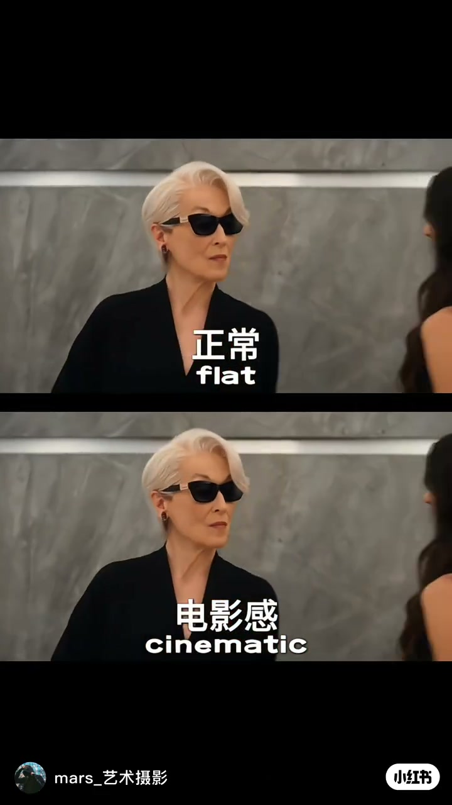
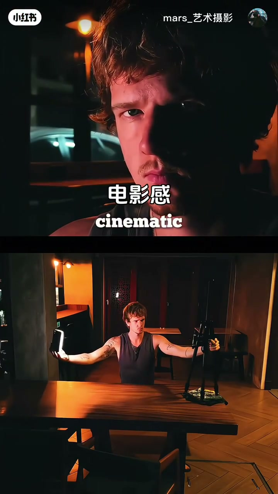
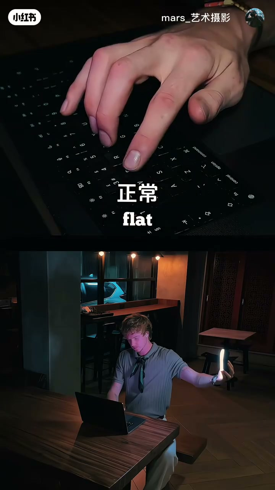
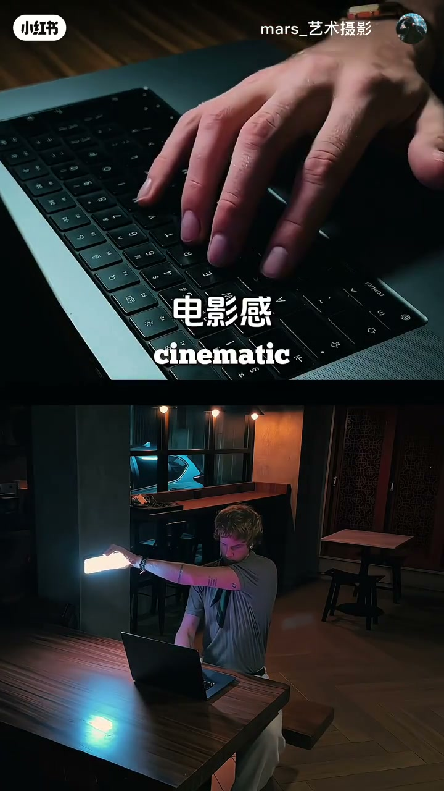
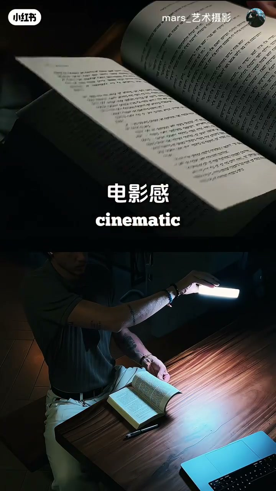
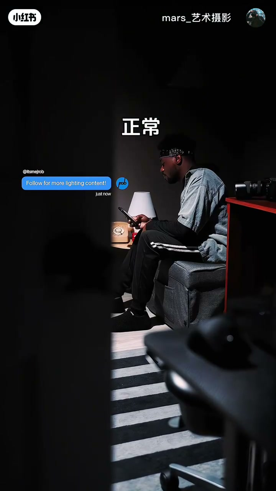
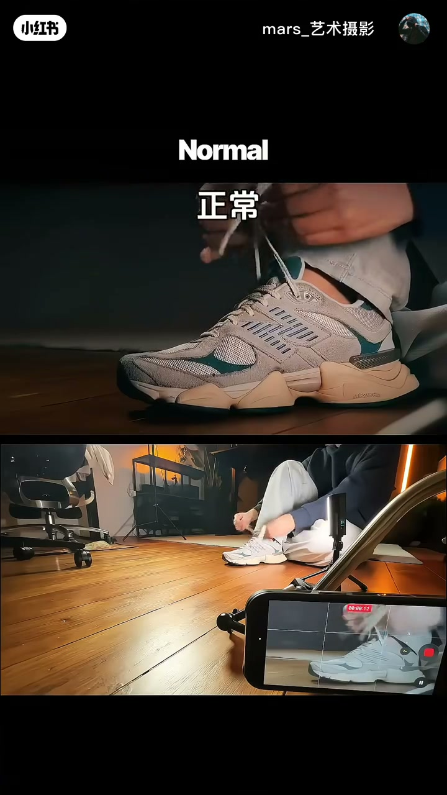
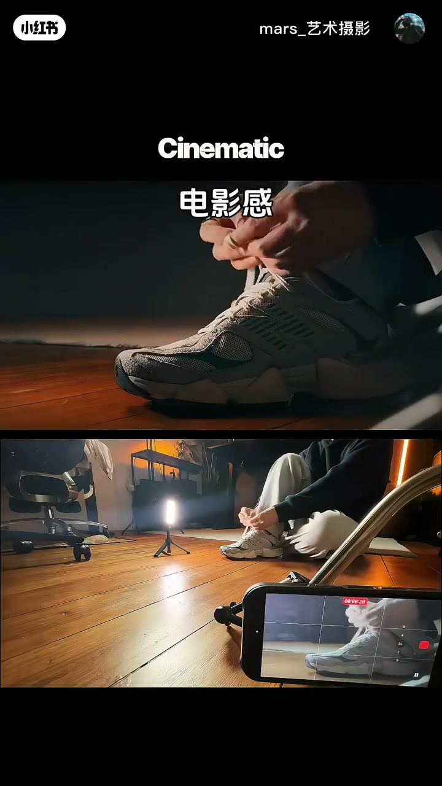

内容要点
mars_艺术摄影用约36秒无口播短片（配乐为主）演示：同一场景，加一盏小LED侧光就能从flat跳到cinematic——人像、键盘、书页、剪影、系鞋带全覆盖。
知识结构
[00:00–00:06]
对照开场
同场景上下分屏：正常/flat vs 电影感/cinematic。
[00:06–00:16]
人像与键盘
手持LED侧光做人像轮廓；键盘特写同理。
[00:16–00:28]
书页与剪影
书页斜光纹理；窗灯+色温对比做剪影电影感。
[00:28–00:36]
日常物件
地面小灯+手机脚架拍系鞋带特写。
总结
电影感≈方向光+对比+局部高光；工具可以是巴掌大的LED；成片与幕后分屏对照最直观。
原片几乎无对白（Whisper仅识别到BGM）；本稿按画面字幕与分镜重建知识点。
00:00–00:06flat vs cinematic 对照
开场用同一构图上下对照：上为正常平光（flat），下为加轮廓光/侧光后的电影感（cinematic）。差别不在器材贵贱，而在光有没有方向与对比。

[00:01] 同景对照：正常/flat vs 电影感/cinematic
Same scene: flat vs cinematic lighting
00:06–00:16人像：手持LED打轮廓
上屏成片：半脸暖光、半脸阴影；下屏揭秘：坐在桌边一手持小型LED板打侧光，一手控相机。同一套手法可迁移到笔记本电脑键盘特写。

[00:07] 人像侧光：小LED手持即可出轮廓
Portrait rim/side light from a tiny handheld LED

[00:12] 细节也能做电影感：先看平光键盘
Even details start flat—keyboard under ambient light

[00:15] 键盘特写：LED局部照亮手指与键帽
Keyboard close-up: LED pools light on fingers and keys
00:16–00:28细节：键盘与书页局部光
书页特写用小灯斜打纸面纹理；再进一镜剪影：台灯/百叶窗光做轮廓，前景门框脏构图，青绿阴影对暖高光——典型电影感色光对比。

[00:21] 书页斜光：纹理与阴影制造阅读氛围
Book pages: angled light reveals texture and mood

[00:28] 剪影电影感：轮廓光+冷暖对比+脏前景
Silhouette cinema: rim light, teal-orange, dirty foreground
00:28–00:36氛围：剪影与系鞋带
先给「正常」顶灯平光对比，再收在系鞋带：地面迷你灯架侧打鞋面，手机三脚架取近景。结论：电影感可在手机+小灯完成。

[00:31] 对比：只有顶灯时画面「正常」无层次
Control: overhead-only light looks flat/normal

[00:35] 系鞋带：地面小灯+手机架也能出电影感
Tying shoes: floor LED + phone tripod still looks cinematic
画面要点时间轴
原片以配乐为主、几乎无口播；以下按画面动作/字幕重建时间轴。
画面对照：正常/flat 与 电影感/cinematic
人像侧光：手持LED打轮廓，下屏展示幕后
键盘特写：从平光到局部LED高光
书页斜光：小灯制造纸面纹理与阴影
剪影氛围：台灯轮廓光 + 冷暖对比
系鞋带：地面小灯 + 手机三脚架完成电影感近景